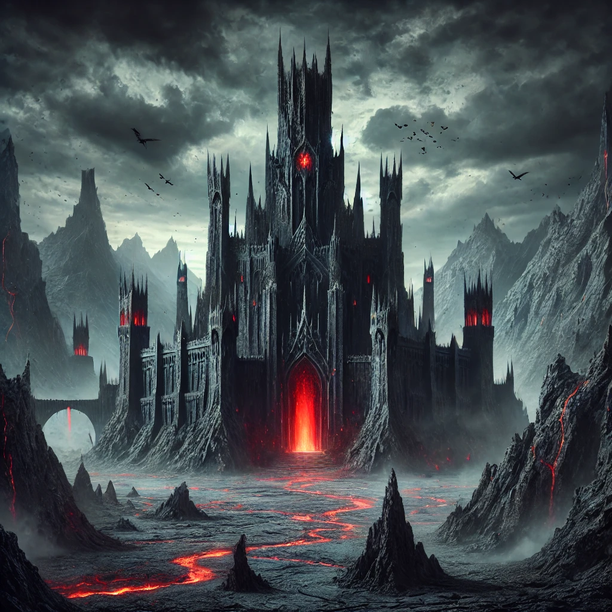

Bag End
A cozy hobbit-hole with a picturesque view over Hobbiton.
Barad-dûr
A dark and powerful fortress looming over Mordor.
Lothlórien
A peaceful woodland realm, where time itself seems to hold its breath.

Caras Galadhon
The radiant city of Galadriel, nestled within the mallorn trees.
Mount Doom
The very fires where the One Ring was forged.
Rivendell
A hidden sanctuary of wisdom and song.
Númenor
The lost kingdom of Men, now swallowed by the sea.
Gondolin
The secret city of the Elves, hidden in the Encircling Mountains.

Angband
The dread fortress of Morgoth, the first Dark Lord.
Joakim's Junkyard Keep
A chaotic goblin hideout filled with mysterious trinkets, forgotten technology, and three suspiciously clever cats.